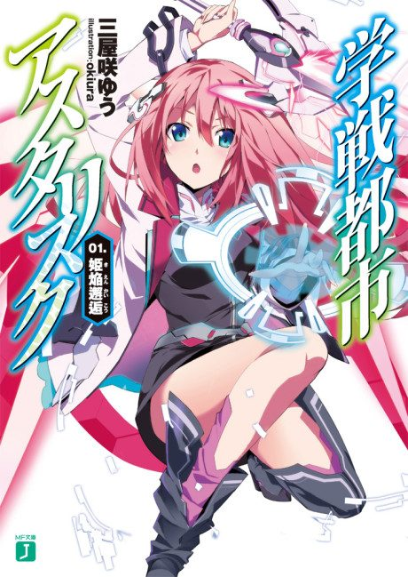
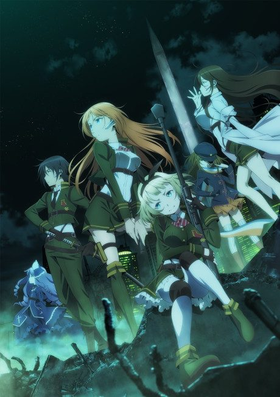

The Asterisk War
学戦都市アスタリスク
In a city built for students with superhuman abilities, Ayato enters a tournament to find his missing sister.
After the anime, read the light novel from Volume 7.
6.5AniList score
—Animeter, no votes yet
24episodes, 2 seasons
Rate it or report where you stopped
Anime finished. Where does the story go next?
Start at Volume7
The two seasons adapt volumes 1 to 6, so start at volume 7, though volume 6 is worth reading first because the anime changes it. The novels are finished at 17 volumes.
1617 end
Season 2Start reading here
More like The Asterisk War
 Unclear7.9
Unclear7.9
 Manga Vol. 77.2
Manga Vol. 77.2
 Unclear5.8
Unclear5.8
 Manga Vol. 47.2
Manga Vol. 47.2
 Unclear6.2
Unclear6.2
 Unclear6.3
Unclear6.3
 Manga Vol. 56.6
Manga Vol. 56.6
 Unclear5.9
Unclear5.9

Unclear6.4 Original7.7
Original7.7
 Manga Ch. 316.7
Manga Ch. 316.7
 Manga Vol. 46.2
Manga Vol. 46.2